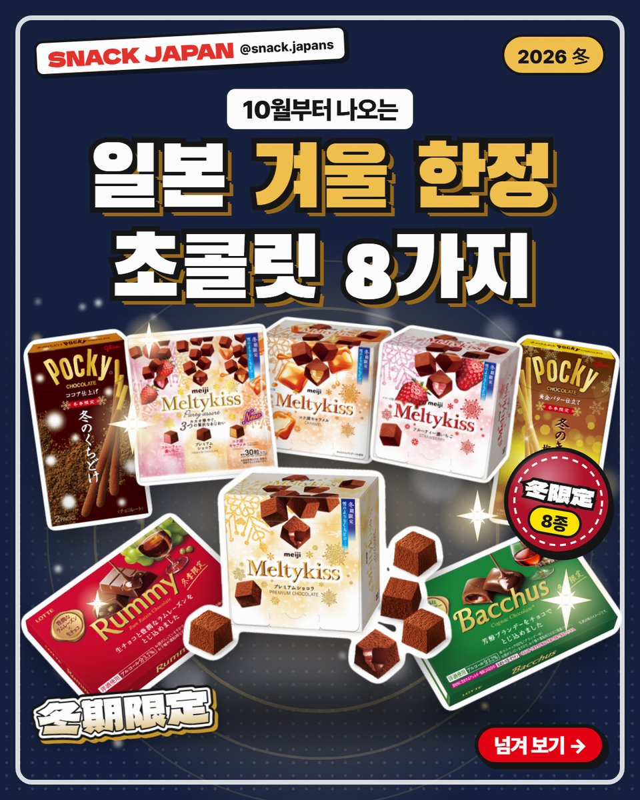
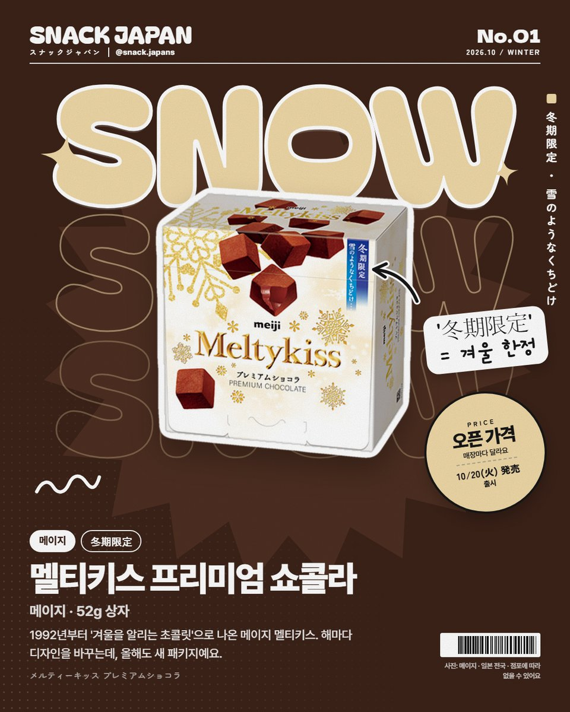
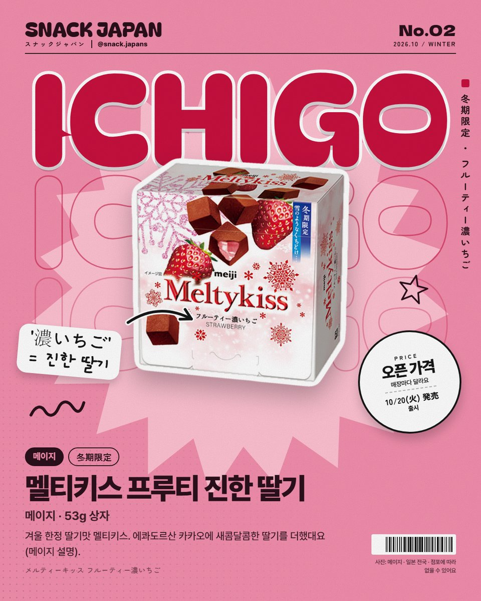
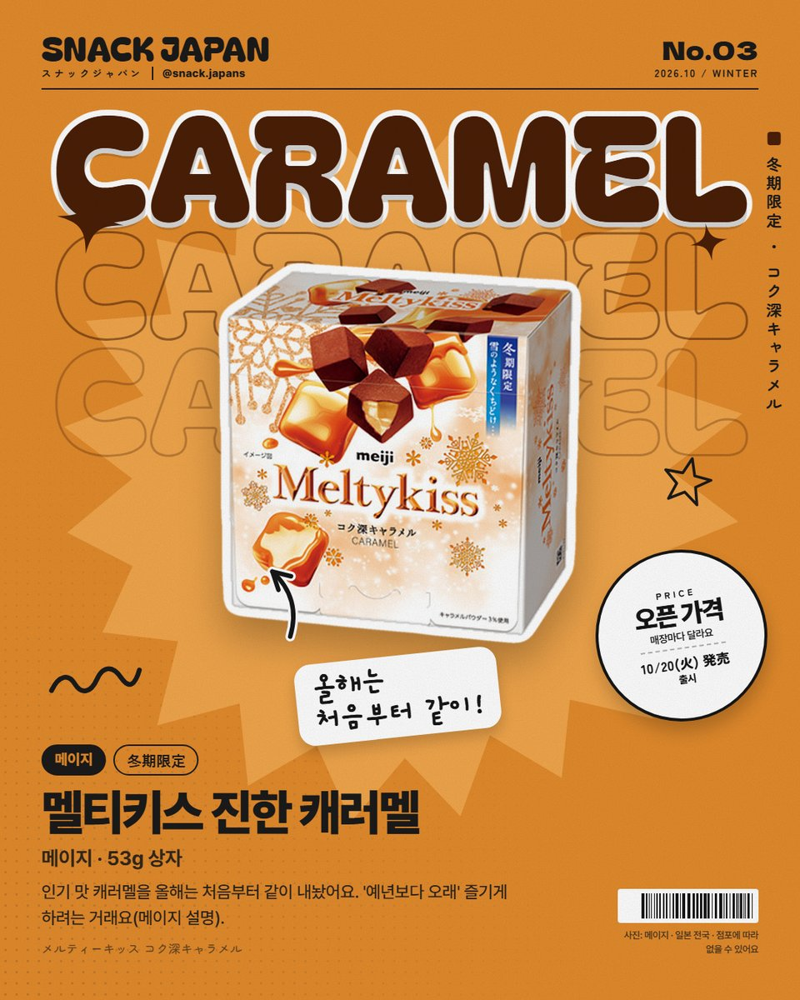
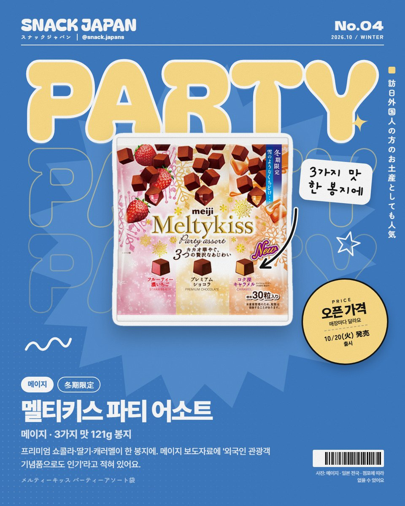
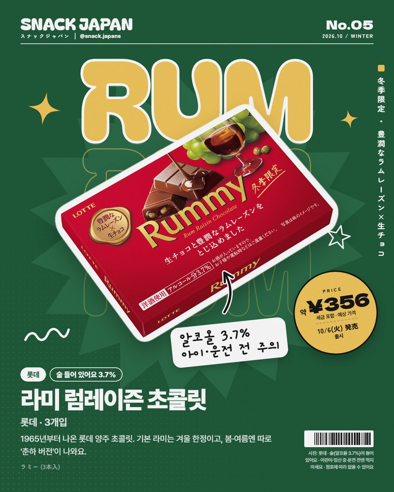
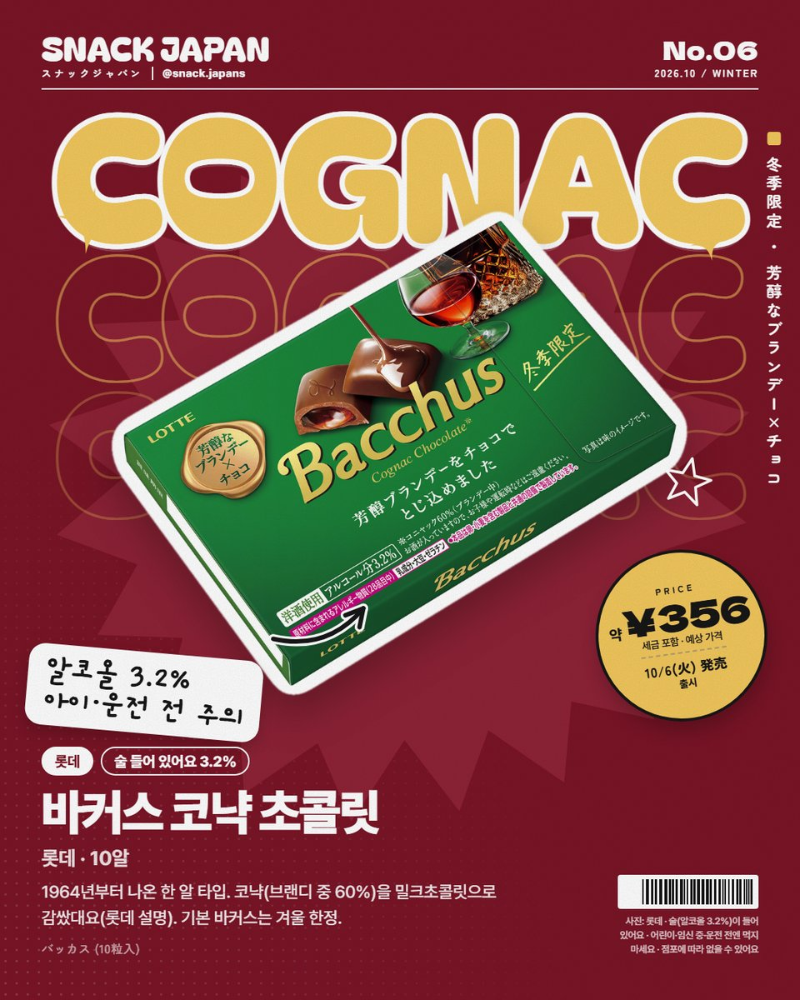
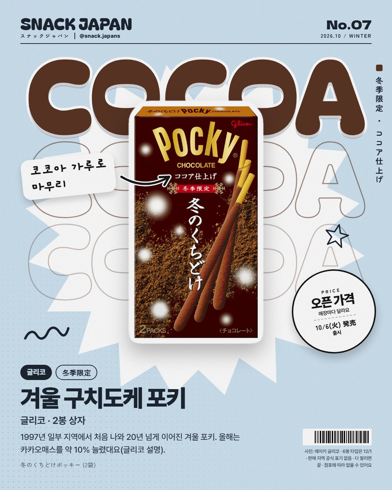
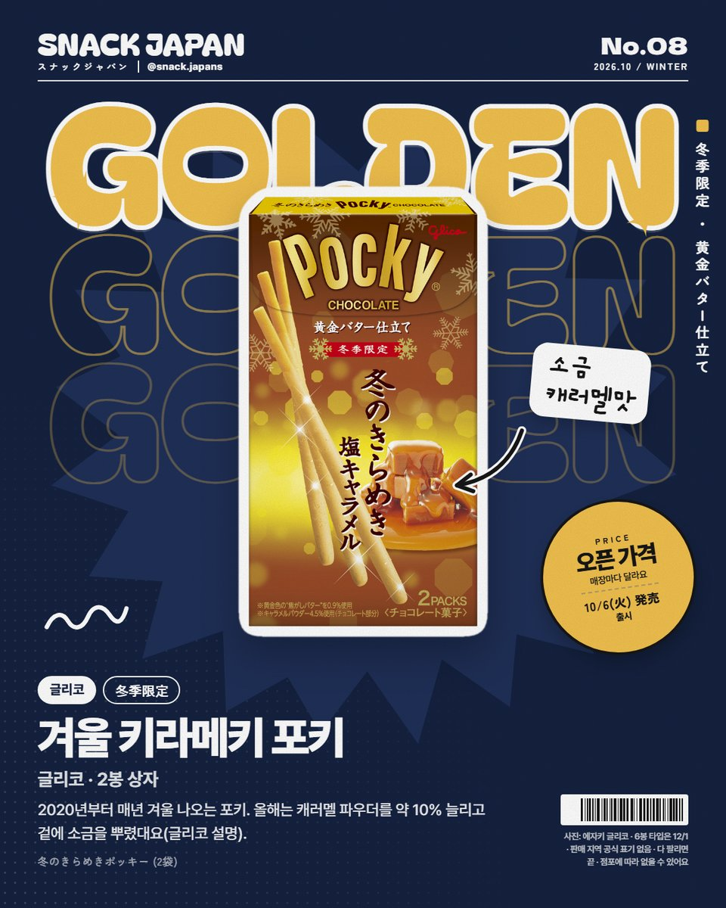

일본 겨울 한정 초콜릿 8가지, 멜티키스·라미·바커스·겨울 포키 총정리
일본은 10월이 되면 '겨울 한정' 초콜릿이 나와요! 메이지·롯데·글리코 겨울 초콜릿 8가지를 한 번에 정리했어요.
일본은 10월이 되면
'겨울 한정' 초콜릿이 나와요 ❄️
상자에 '冬期限定'·'冬季限定'(겨울 한정)이라고 적혀 있는 그 초콜릿들!
메이지·롯데·글리코가 올해 내놓은 8가지,
공식 발표 기준으로 하나씩 볼게요!


1. 멜티키스 프리미엄 쇼콜라 (메이지)
1992년부터 '겨울을 알리는 초콜릿'으로 나온 메이지 멜티키스예요.
해마다 디자인을 바꾸는데, 올해도 새 패키지래요.
- 출시: 10월 20일, 일본 전국
- 크기: 52g 상자
- 일본 이름: メルティーキッス プレミアムショコラ

2. 멜티키스 프루티 진한 딸기 (메이지)
에콰도르산 카카오에 새콤달콤한 딸기를 더했대요 (메이지 설명).
- 출시: 10월 20일, 일본 전국
- 크기: 53g 상자
- 일본 이름: メルティーキッス フルーティー濃いちご

3. 멜티키스 진한 캐러멜 (메이지)
인기 맛 캐러멜을 올해는 처음부터 같이 내놨어요.
'예년보다 오래' 즐기게 하려는 거래요 (메이지 설명).
- 출시: 10월 20일, 일본 전국
- 크기: 53g 상자
- 일본 이름: メルティーキッス コク深キャラメル

4. 멜티키스 파티 어소트 (메이지)
프리미엄 쇼콜라·딸기·캐러멜 3가지 맛이 한 봉지에 들어 있어요.
메이지 보도자료에 '외국인 관광객 기념품으로도 인기'라고 적혀 있어요.
- 출시: 10월 20일, 일본 전국
- 크기: 121g 봉지
- 일본 이름: メルティーキッス パーティーアソート袋

5. 라미 (롯데)
1965년부터 나온 롯데 양주 초콜릿이에요.
럼레이즌과 생초콜릿이 들어 있대요 (롯데 설명).
기본 라미는 겨울 한정이고, 봄·여름엔 따로 '춘하 버전'이 나와요.
- 출시: 10월 6일, 일본 전국
- 크기: 3개입
- 알코올: 3.7%
- 일본 이름: ラミー

6. 바커스 (롯데)
1964년부터 나온 한 알 타입이에요.
코냑(브랜디 중 60%)을 밀크초콜릿으로 감쌌대요 (롯데 설명).
기본 바커스도 겨울 한정이고, 봄·여름엔 따로 '춘하 버전'이 나와요.
- 출시: 10월 6일, 일본 전국
- 크기: 10알
- 알코올: 3.2%
- 일본 이름: バッカス
⚠️ 라미(알코올 3.7%)·바커스(알코올 3.2%)는 술이 들어 있어요.
어린이·임신 중·운전 전에는 먹지 마세요.

7. 겨울 구치도케 포키 (글리코)
1997년 일부 지역에서 처음 나와 20년 넘게 이어진 겨울 포키예요.
올해는 카카오매스를 약 10% 늘렸대요 (글리코 설명).
마무리는 코코아 가루!
- 출시: 10월 6일 (2봉 상자) · 6봉 타입은 12월 1일
- 일본 이름: 冬のくちどけポッキー

8. 겨울 키라메키 포키 (글리코)
2020년부터 매년 겨울에 나오는 포키예요.
올해는 캐러멜 파우더를 약 10% 늘리고, 겉에 소금을 뿌렸대요 (글리코 설명).
- 출시: 10월 6일 (2봉 상자) · 6봉 타입은 12월 1일
- 일본 이름: 冬のきらめきポッキー
총평
- 기준: 10월 20일 메이지·롯데·글리코 공식 발표
- 가격: 사진 카드에 정리해 뒀어요
- 참고: 겨울 포키는 판매 지역 공식 표기가 없고, 다 팔리면 끝이에요
- 참고: 멜티키스 상품 페이지에는 '23℃ 이하 서늘한 곳에 보관'이라고 적혀 있어요
- 추천: 겨울에 일본 가는 분, 기념품 초콜릿 고르는 분
겨울에 꼭 사는 초콜릿 있으세요?
1~8번 중에 하나만 고른다면 몇 번이에요? 🍫